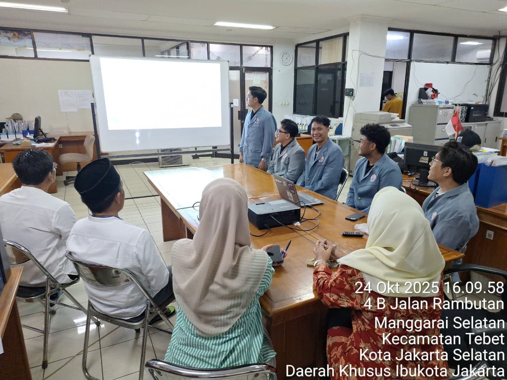
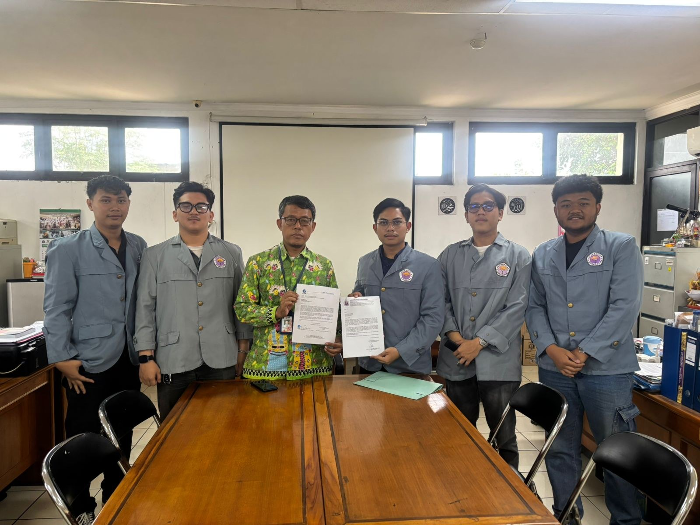
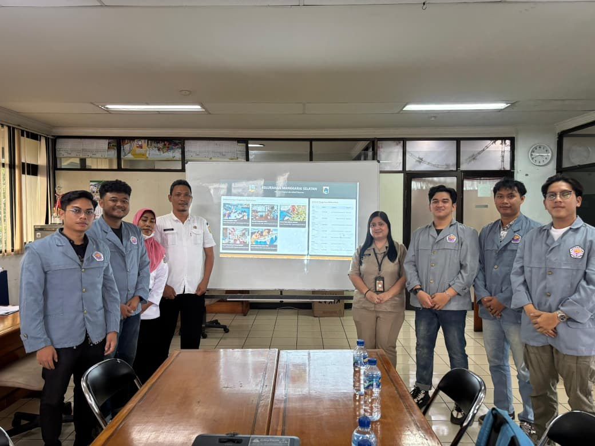

Halo, Saya
Full Stack Web Developer • Backend & Frontend • System Analyst • IT Support
Lulusan S1 Informatika Universitas Gunadarma (IPK 3.68/4.00) dengan kombinasi keahlian teknis pengembangan web end-to-end (PHP, Laravel, React.js, Next.js, Go, MySQL/Oracle) serta kepemimpinan nyata sebagai Project Manager dan System Analyst. Terbiasa terjun langsung menganalisis kebutuhan klien, merancang arsitektur basis data, mengimplementasikan kode, hingga memimpin presentasi solusi perangkat lunak yang siap pakai.
Bekasi, Indonesia • IPK 3.68 / 4.00
Dirancang dalam tata letak Bento Grid agar HRD dan tim rekruter dapat melihat kualifikasi inti saya secara cepat dan terukur.
Banyak pengembang hanya fokus pada sisi teknis, sementara saya terbiasa memulai dari hulu ke hilir: berdiskusi langsung dengan pemangku kepentingan (seperti perangkat Kelurahan Manggarai Selatan), memetakan alur kerja menjadi spesifikasi sistem (System Analysis), memimpin pembagian tugas tim sebagai Project Manager, mengimplementasikan kode Full Stack (Frontend, Backend, Database), hingga menguji dan mempresentasikan hasilnya.
Sarjana Komputer (S1 Informatika) • IPK 3.68 / 4.00
Fokus Mata Kuliah: Pengelolaan Proyek Perangkat Lunak (PPPL), Pemrograman Web, Rekayasa Perangkat Lunak, Sistem Basis Data, Analisis & Perancangan Sistem, Jaringan Komputer, dan Kecerdasan Buatan.
Membangun aplikasi web responsif & RESTful dengan PHP, Laravel, React.js, Next.js, Go, dan MySQL.
Menggali kebutuhan user, menyusun spesifikasi bisnis, merancang UML, ERD, dan alur sistem.
Mengelola timeline pengembangan, pembagian tugas tim, quality assurance, dan presentasi stakeholder.
Troubleshooting software/hardware, konfigurasi Wireless LAN & TCP/IP, serta administrasi MySQL/Oracle.
Peran: Project Manager, System Analyst & Full Stack Web Developer (Okt 2025 – Des 2025)
Proyek Pengabdian Kepada Masyarakat (PKM) dari mata kuliah Pengelolaan Proyek Perangkat Lunak (PPPL) yang mendigitalisasi papan informasi jadwal pelayanan warga, dokumentasi kegiatan kelurahan (BPJS, PPSU, kemasyarakatan), serta pengumuman berjalan (running text) di Kelurahan Manggarai Selatan, Kecamatan Tebet, Jakarta Selatan.
kelurahanmanggaraiselatan.wuaze.com).

Memimpin Presentasi Sistem di Hadapan Pejabat Kelurahan


Klik pada foto mana saja untuk melihat ukuran penuh beserta keterangan kegiatan.
Peran: Full Stack Web Developer | Penelitian Ilmiah (2024–2025) & Pengembangan Lanjutan Skripsi (2025–2026)
Platform web agregator pemesanan tiket bus antarkota (serupa konsep RedBus) yang mengakomodasi seluruh operator penyedia layanan bus dengan parameter khusus wilayah Pulau Jawa serta layanan rute AKAP (Antarkota Antarprovinsi) dan AKDP (Antarkota Dalam Provinsi).
Seluruh sertifikat di bawah ini dilengkapi dokumen PDF asli yang telah ditandatangani secara elektronik oleh Universitas Gunadarma.
Lembaga Sertifikasi Profesi (LSP) Universitas Gunadarma • Tanggal Ujian: 10 Juni 2026 • NPM: 51422474 (Kelas 4IA23)
| # | Kode Unit SKKNI | Nama Unit Kompetensi | Hasil Asesmen |
|---|
Menyelesaikan studi S1 Informatika di Universitas Gunadarma, lulus 8 unit kompetensi nasional Junior Web Programmer LSP, Pelatihan Dasar Pembuatan Aplikasi Web, serta Aptitude Test.
Memimpin tim proyek Pengabdian Kepada Masyarakat (PKM) mata kuliah Pengelolaan Proyek Perangkat Lunak (PPPL), mulai dari analisis kebutuhan di kantor kelurahan, pengodean sistem, hingga presentasi akhir.
Membangun platform agregator tiket bus antarkota se-Pulau Jawa (AKAP & AKDP) dalam 2 tahap: Penelitian Ilmiah (2024–2025) dan pengembangan lanjutan Skripsi (2025–2026).
Menyelesaikan rangkaian pelatihan teknis Fundamental DBMS, Fundamental Web Programming, Oracle (Beginner & Intermediate), Golang (Beginner & Intermediate), serta Workshop Instalasi LAN Nirkabel.
Tertarik mengundang wawancara atau berdiskusi mengenai posisi Full Stack Web Developer, Backend/Frontend Developer, System Analyst, atau IT Support? Silakan hubungi saya melalui kanal berikut: